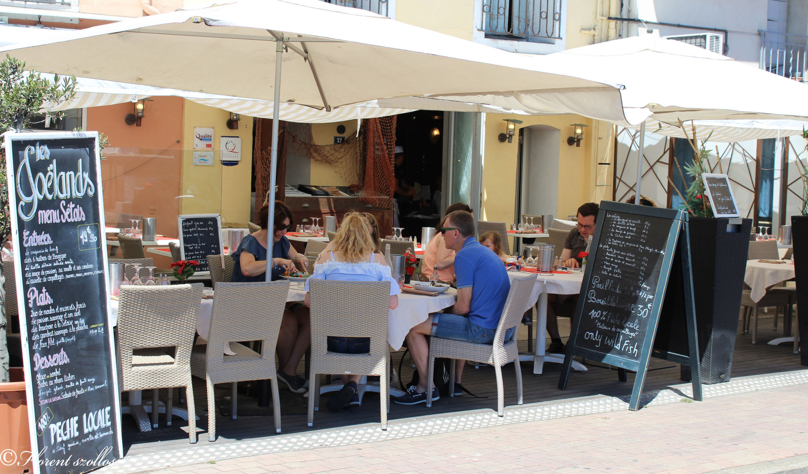
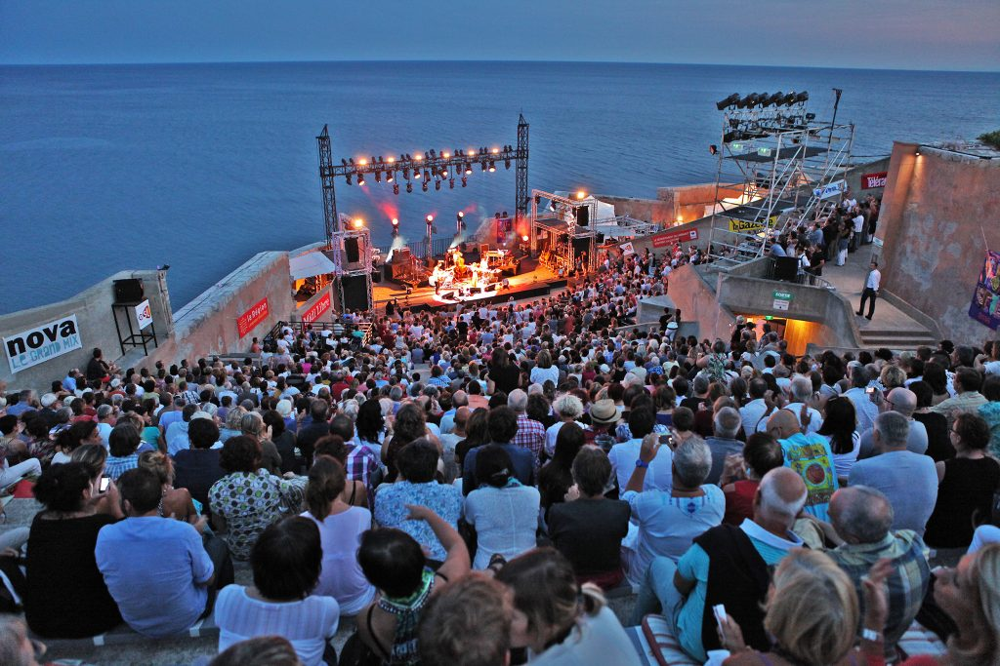

Le tourisme à Sète
Découverte

Authenticité, terroir, patrimoine, plage, canaux : tout est là ...
Des canaux qui quadrillent la ville, le Mont Saint Clair offrant un panorama exceptionnel jusqu’aux Pyrénées, un port de pêche en centre ville, 12 km de plages de sable fin, assurément Sète dispose de tous les atouts pour une découverte typique et surprenante...
Une ville posée sur l'eau...
Il y a un peu plus de trois siècles, Louis XIV décida d’offrir un débouché maritime au canal du Midi. Le 29 juillet 1666, naquit le port de Sète, fêté par des joutes nautiques depuis lors indissociables de la cité. Ce port fit sa richesse grâce notamment au commerce du vin.
Son urbanisation et son architecture en portent encore le témoignage. Le port avec ses cargos, paquebots, voiliers et bateaux de pêche constitue le coeur de la ville. Ici, un souffle particulier a inspiré de grands écrivains, poètes, chanteurs : Paul Valéry, Jean Vilar, Georges Brassens, ainsi que des artistes peintres qui exposent dans les galeries du monde entier.
Où manger

Avec des spécialités culinaires largement inspirées par les origines italiennes d'une partie de la population et par les produits de la mer et de l'étang de Thau qui entourent la ville, la cuisine sétoise est allé.
La bourride, la bouillabaisse, les moules et les encornets farcis, la macaronade, la tielle, la rouille de seiche... à déguster dans l'un de nos nombreux restaurants.
Nous présentons ici les établissements qui se sont engagés dans une démarche de qualité pour laquelle ils ont obtenu un label, ou qui ont été distingués par des guides gastronomiques, ainsi que les restaurants spectacle et les restaurants de plage.
Sète compte aussi de nombreux autres restaurants que vous pourrez selectionner selon les critères proposés.
Où dormir

Préparez votre séjour en choisissant dès aujourd'hui l'hébergement adapté à vos envies et à votre budget : hôtels, résidence de ourisme, locations de vacances, chambres d'hôtes, camping, village de vacances, auberges de jeunesse...
Côté mer ou coeur de ville ? A Sète vous avez le choix.
Patrimoine
- L'église décanale Saint-Louis par l'architecte Augustin-Charles d'Aviler, toute fin XVIIe siècle, consacrée en 1703 (classée MH en 1989). Son clocher a abrité jusqu'au début du XXe siècle deux importantes cloches réalisées par Jean Poutingon en 1761. Ces cloches ont malheureusement été refondues. Le bourdon actuel date de 1924, une seconde cloche, beaucoup plus modeste, placée juste en dessous date de 1924. L'étage supérieur, sorte de lanterne ouverte sur ses quatre côtés, en fer et zinc, auquel on accède par un escalier en colimaçon en bois, fut rajouté au milieu du XIXe siècle en lieu et place de l'ancien campanile d'origine en fer forgé. Il comporte une troisième cloche datant de 1914. Le tout est surmonté d'une terrasse sur laquelle fut installée une statue de la Vierge, à l'origine dorée à la feuille.

- L'église Saint-Pierre : le clocher abrite un important carillon du XIXe siècle en cours de restauration.
- Le palais consulaire, de style Art déco, est surmonté à son angle d'une originale tour de l'horloge-campanile. Belle ferronnerie de la porte d'entrée.
- Nombreuses façades haussmanniennes richement décorées (1860-1920)
- Anciens entrepôts Dubonnet (1924) le long du canal. Inscrits MH depuis 2008, rare vestige architectural de l'important trafic vinicole qui anima le port de Sète aux XIXe et XXe siècle . Les anciens chais sont organisés autour d'une grande halle étoilée sur plan carré.
- Le canal royal.
- Le mont Saint-Clair, qui offre un large panorama depuis son nouveau belvédère.
Culture

Deux théâtres, sept espaces culturels, dix festivals. Au fil de ses grandes expositions, de ses spectacles et de ses concerts, la programmation culturelle rythme la vie sétoise.
Un incontournable : une soirée au Théâtre de la Mer
Cet ancien fort, réaménagé en théâtre au début des années 60, est un incroyable amphithéâtre à ciel ouvert. Les plus grands artistes internationaux s'y sont produits pour le plaisir de jouer avec la mer en toile de fond. Féerique !